This vignette provide a quick-start guide using data from Zeisel et al. (2015) to illustrate the functionalities of the shiny application ASTEC-sc.
You may download the SCE object to test the application here : SCE-ZeiselBrain-example.RData
Upload data tab is a required way to use the app. For now, to use this application, you have to upload a SingleCellExperiment (SCE) object. This object has to be saved in a Rdata file. You can upload data and, when upload step is complete, a summary of the elements available in the SCE object is given.
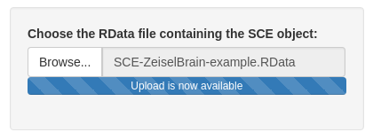
This object must have a specific structure. You may refer to this vignette to see how build a SCE object.
Please follow these recommendations for building your SCE object:
sce@assays contains the different types of data (raw counts (counts), normalized counts (normcounts), log-normalized counts (logcounts), …). By default: ‘counts’, ‘logcounts’ and ‘normcounts’ are required. The rows correspond to features (e.g. genes), the columns to cells.sce@metadata(optional) contains supplementary information for cells (qualitative variables).sce@metadata$clustering contains a list of the different cell clusterings.reducedDims(sce) contains a list of coordinate matrices for each considered dimensionality reduction method.sce@int_elementMetadata contains the supplementary information for features In particular, sce@int_elementMetadata$KnownFunc (optional) may contain a binary data frame where each column corresponds to a biological function and all features in rows.You may verify the structure of the SCE object with the following information described in the tab. This information will be shown when the object is uploaded. The summary of the SCE is composed of:
sce@assays)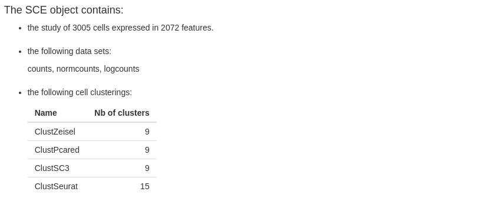
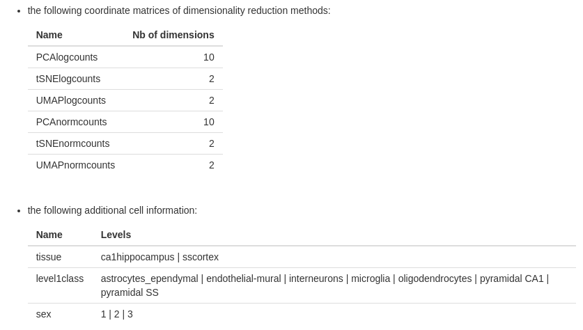
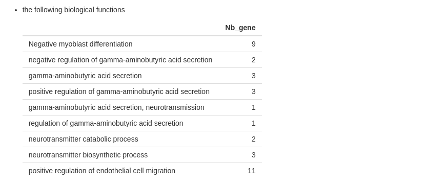
If any information missed in the description, follow the recommendations on the vignette for building your SCE object.
The purpose of Descriptive statistics tab is to show the expression of data.
In this tab, you may play with two variables :
sce@metadata without clusterings (namely the supplementary information for cells), and the empty choice ‘–’ (by default).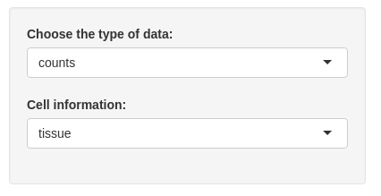
The first plot shows the percent of expressed cells by mean of cell expression. The type of data input change the x-axis (the mean of cells expression).
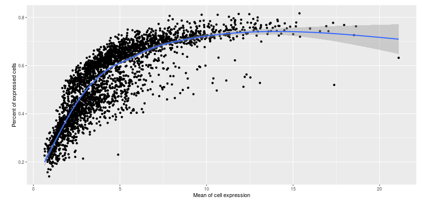
The two following plots show the proportion of expressed cells/expressed features respectively. You may plot result by cell information if you change the empty choice in the input.
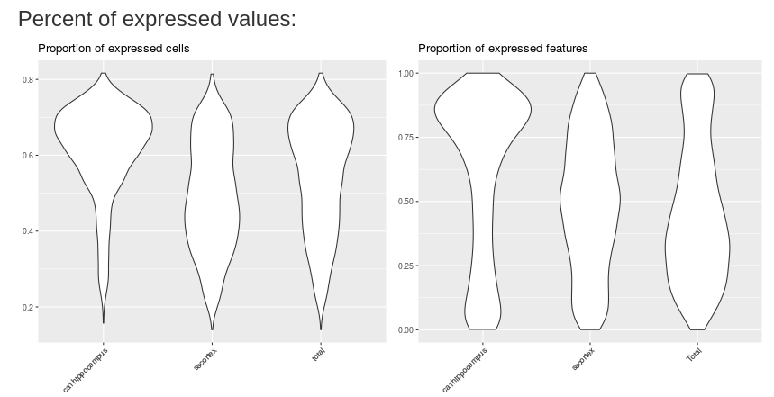
The last two plots show the density of mean expression by cells and features respectively. These plots are updated with the input values.
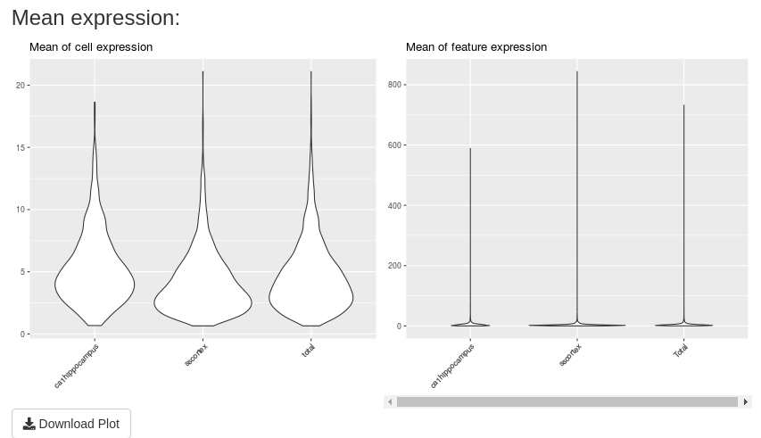
A “Download Plot” button is available in this tab. If you click on, you can download all these plots in only a unique one png image.
This tab allows to visualize cells in a low-dimensional space based on the dimensionality reduction methods available in the SCE object.
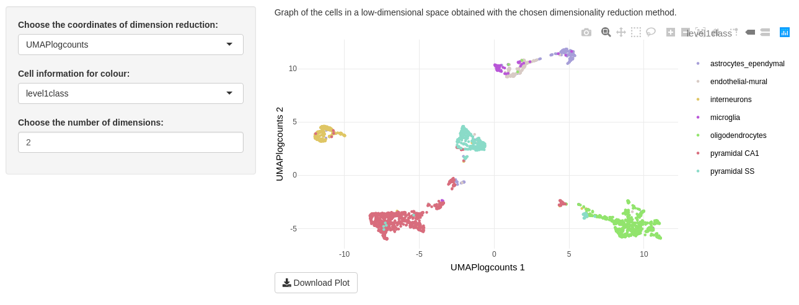
For a great visualization, you can play with the three inputs on this tab.
The “Choose the coordinates of dimension reduction” input lets you to choose values contained in reducedDims(sce). By default, the first reduced dimension method of your object is selected.
The “Cell information for colour” input allows to colour cell points as follows:
sce@metadata with categorical coloursce@metadata$clustering with categorical colourThe “Choose the number of dimensions” depends on the dimensionality reduction input. You may choose from to until the number of dimensions of the selected method. If you choose n dimensions, a combination of the n first dimensions will be printed. We advise you to choose only two dimensions because of calculating time increasing with number of dimensions.
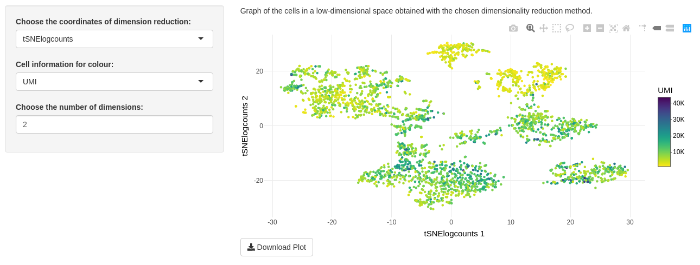
Only one plot is shown on “Visualization of data” tab. This is a graph of the cells in a low-dimensional space. With the package plotly to print the plot, you can zoom in to watch a part of data, select some categorical colour. Clicking on camera download a png image of your DT modification. You may also download the entire plot in a png image with the “Download Plot” button.
The “Comparison of several cell clusterings” tab allows to compare cell clusterings with two sub-tabs.
Inputs are common to both sub-tabs. The first, called “The main cell clusterings” is a unique choice selection input. You may choose a clustering from sce@metadata$clustering.
The second input, called “The other cell clusterings” depends on the first input. You find, in the second input choices, the other cell clusterings from sce@metadata$clustering. You may choose a subset from the other clusterings.
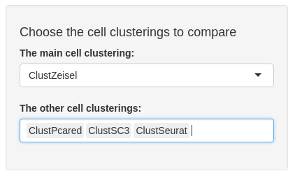
The ARI sub-tab plots a colour table of adjusted rand index (ARI) between each selected cell clustering. ARI is the corrected-for-chance version of a measure of the similarity between two cell clusterings. The closer ARI is to 1, the more similar the two clusterings are.
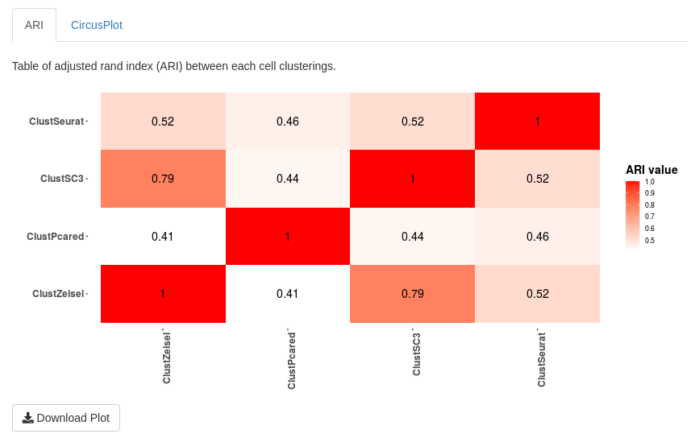
You may download this plot in a png image with the “Download Plot” button.
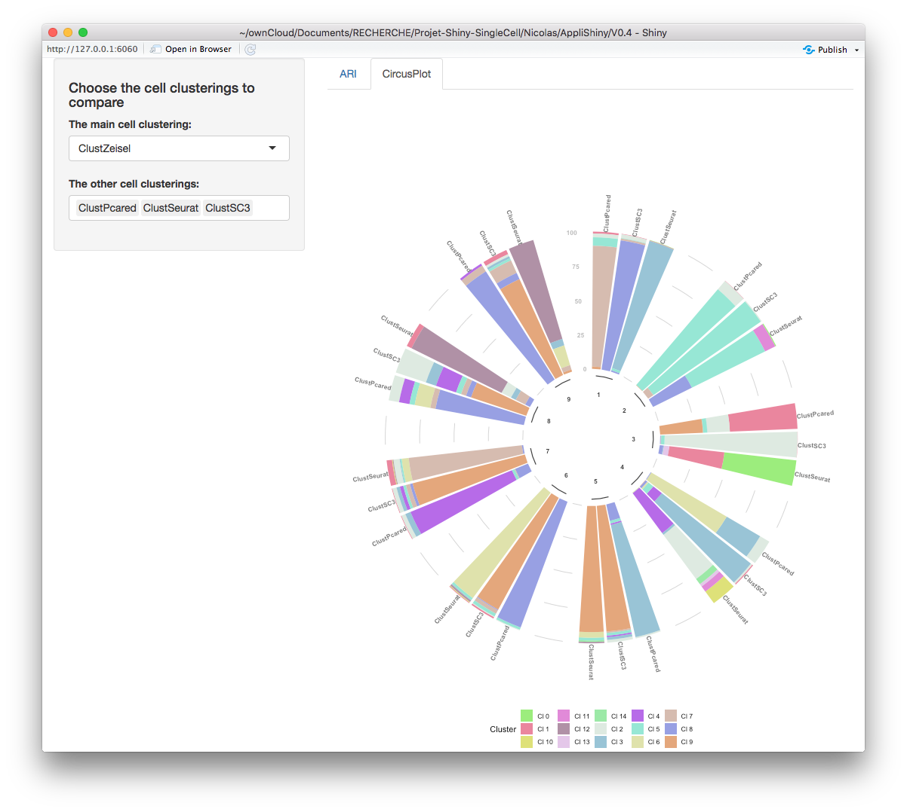
In the circus plot, choosing a main clustering makes sense. Indeed, this plot shows how many cells per cluster (from the main clustering) there are from other clusters (from other clusterings selected in the specific input). You may download this plot in a png image with the “Download Plot” button.
The “Chosen cell clustering” tab, composed of two sub-tab, focuses on a studied cell clustering.
Two inputs are common of the both sub-tabs. The “Choose the studied cell clustering” input allows to choose one cell clustering among those available in sce@metadata$clustering. All plots in this tab depend on this input. The “Choose an information for cells” input is the second common input. You may choose between cell information, contained in sce@metadata$clustering and the empty choice ‘–’.
The input “Choose a type of data” allows to choose one type of data name among those available in assays(sce). This input is only used in ‘description’ sub-tab. The “Choose the studied cluster” input allows to choose one cluster among those available in the studied cell clustering. This input is only used in ‘Specific cluster’ sub-tab. The “Choose the dimensionality reduction method” input allows to choose between values contained in reducedDims(sce). This input is only used in ‘Specific cluster’ sub-tab.
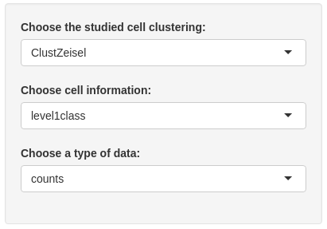
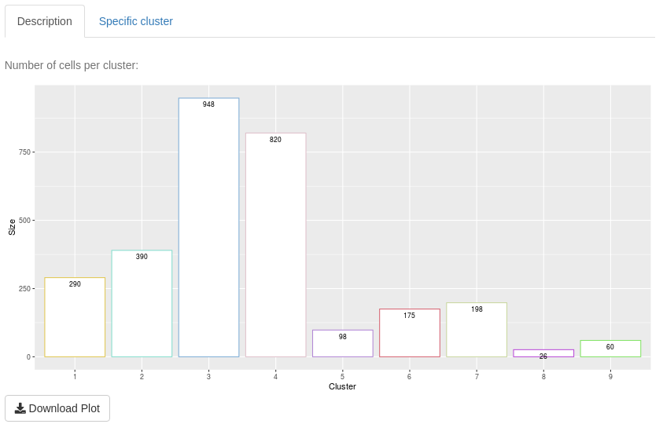
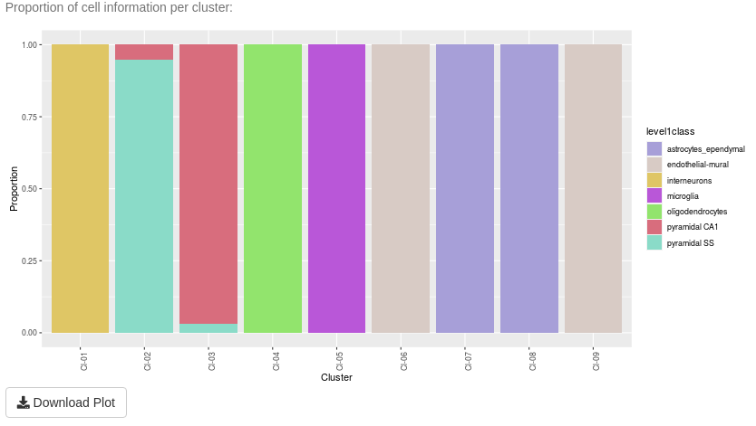
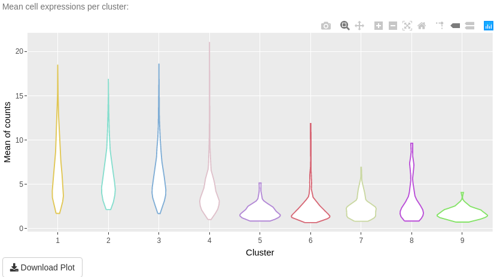
The aim of “Description” sub-tab is to give information about one clustering and its clusters.
The first plot is a bar-plot about the number of cells per cluster. The second plot is a bar-plot about the proportion of cell information per cluster. To access to this plot, select other values of the cell information input than the empty choice ‘–’. The third plot in a violin plot about mean cell expressions per cluster. This plot depends on the type of data input.
All plots have a “Download plot” button to save them in a png image
The aim of “Specific cluster” sub-tab is to describe a cluster of a selected clustering.
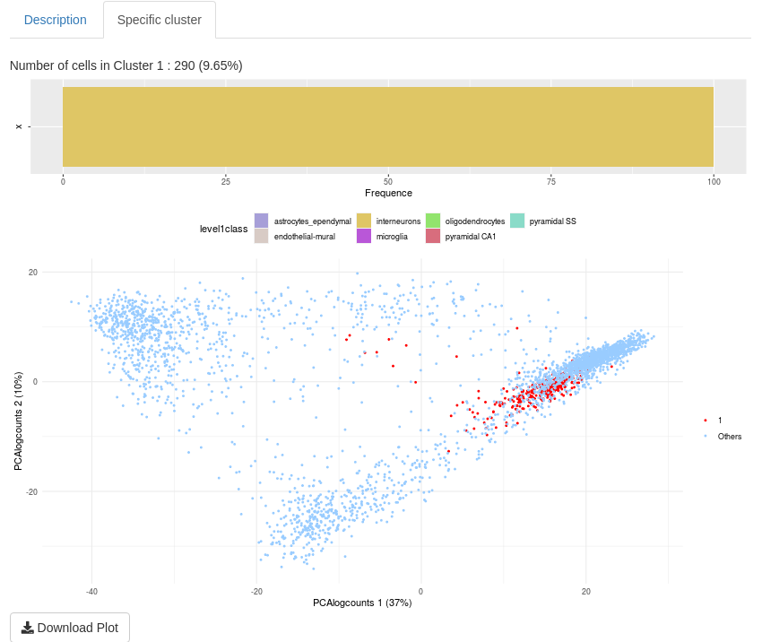
The first plot is visible when ‘–’ is not selected (in the “Choose an information for cells” input). This is a reminder of proportion of cell information for the selected cluster. The second plot is a visualization of the selected cell cluster in a chosen low-dimensional space. All plots have a “Download plot” button to save plots in a png image
“Detection of marker genes” tab allows you to determine marker genes (namely genes with a difference of expression) between two cell groups (a group may be a cluster or a merge of several clusters). Some indicators could help to select these genes. To find marker genes, you have to select some clusters to compare expressing values.
Firstly, you have to select a clustering in the corresponding input. By default, the first clustering in sce@metadata$clustering is selected.
Secondly, you may define the two groups of cells for calculating. The first input ‘Choose one (some) studied cluster(s)’ is the first cell group. You could select one cluster or merge some clusters (but not all) for the first group. The second group, with the “Choose the comparing group of clusters (one, some or all others)” input, can be composed with the remaining cluster. You could select one cluster or merge some clusters. If you want to select all others cluster, you may select “all others” choice.
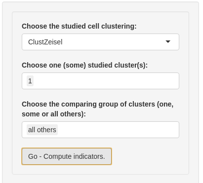
Then, you are ready to detect marker genes. Please, click on “Go - Compute indicators”.
The second part of input allows to filter genes thanks to the dynamic choice of thresholds on the following indicators:
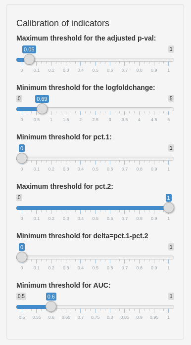
On “Find Marker Genes” sub-tab, you obtain a table of result with indicator values for each filtered marker gene. The interactive table only shows the first ten genes, by default. You may browse the other page or display more lines. The “Download table” button saves a csv data frame with all your filtered genes.
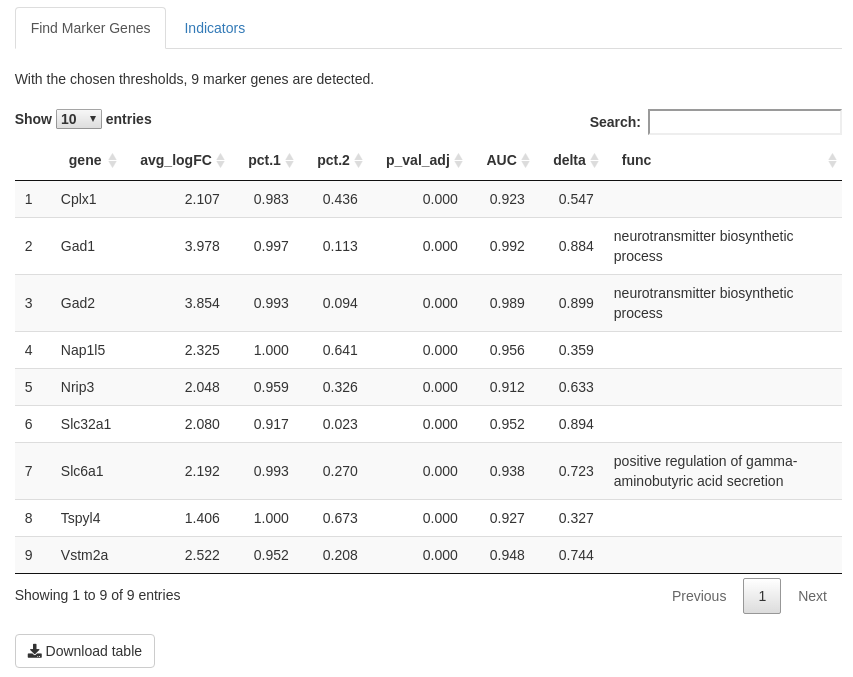
On “Indicator” sub-tab, you may find definitions of the indicators and density of this indicator. That may help you to choose thresholds of these indicators. By default, a ridges plot is used for graphs but you may also choose box-plot or violin plot.
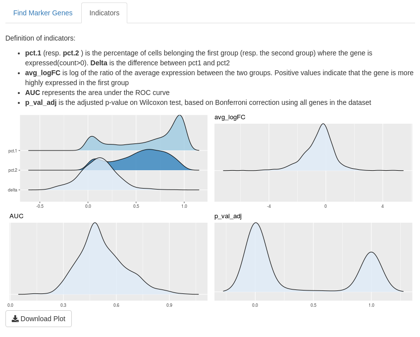
Before analyzing genes, you need to choose genes. Firstly, you have to choose the source of the list of genes:
sce@int_elementMetadata$KnownFunc is not empty and is a binary table with different genes by row and different function by columns, you may select genes from a specific gene function.In the second input, you can choose if you want to analyse all genes from the chosen list or just a part of this list. If you want to select some genes, a multiple choice input is created and you may select almost 20 genes. Note: if you choose the list ‘From your object’ you cannot select all genes from this list.
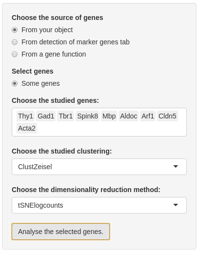
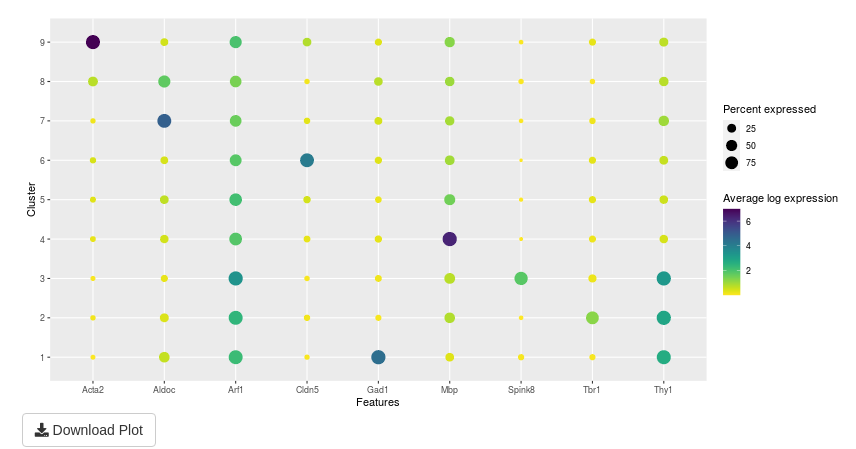
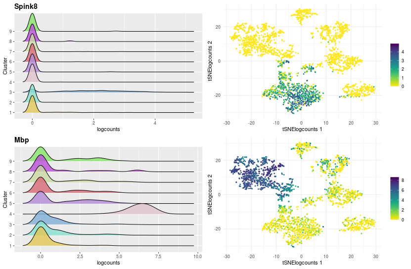
The analysis of selected genes is made in two parts:
the first part is a summary of plots in the second part. This plot shows the average log expression and the percent expressed for a couple of gene and cluster.
the second part details the expression of gene with two graphs per gene:
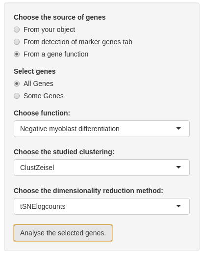
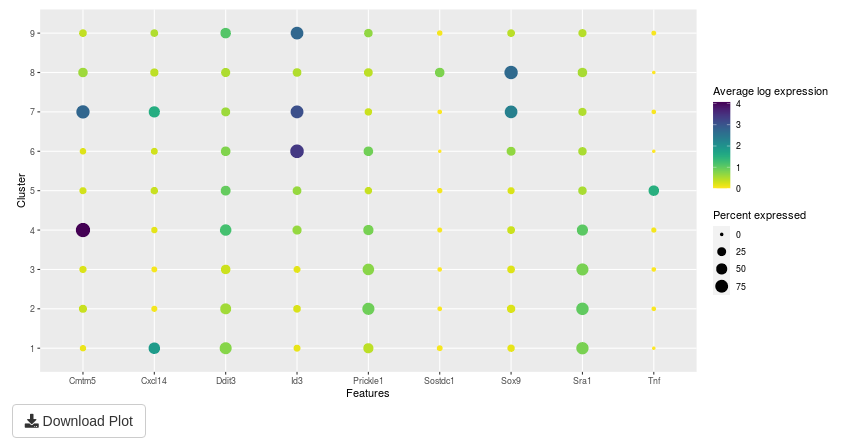
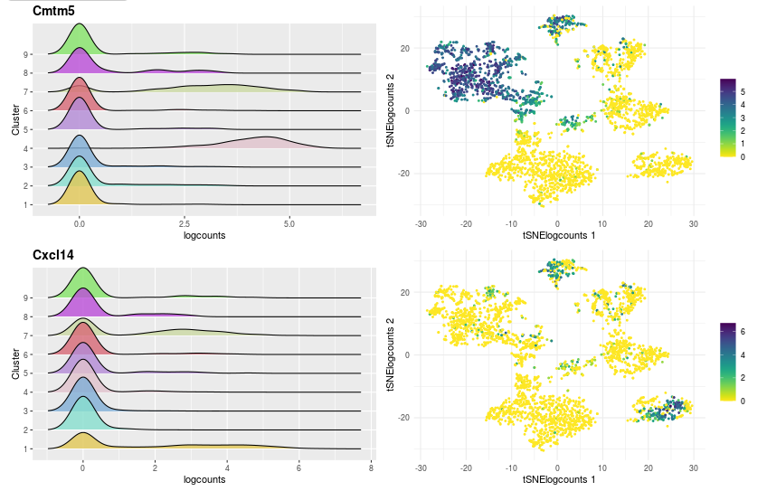
Zeisel, Amit, Ana B Muñoz-Manchado, Simone Codeluppi, Peter Lönnerberg, Gioele La Manno, Anna Juréus, Sueli Marques, et al. 2015. “Cell Types in the Mouse Cortex and Hippocampus Revealed by Single-Cell Rna-Seq.” Science 347 (6226): 1138–42.